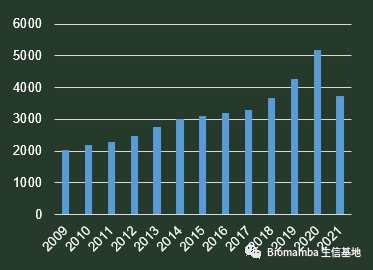
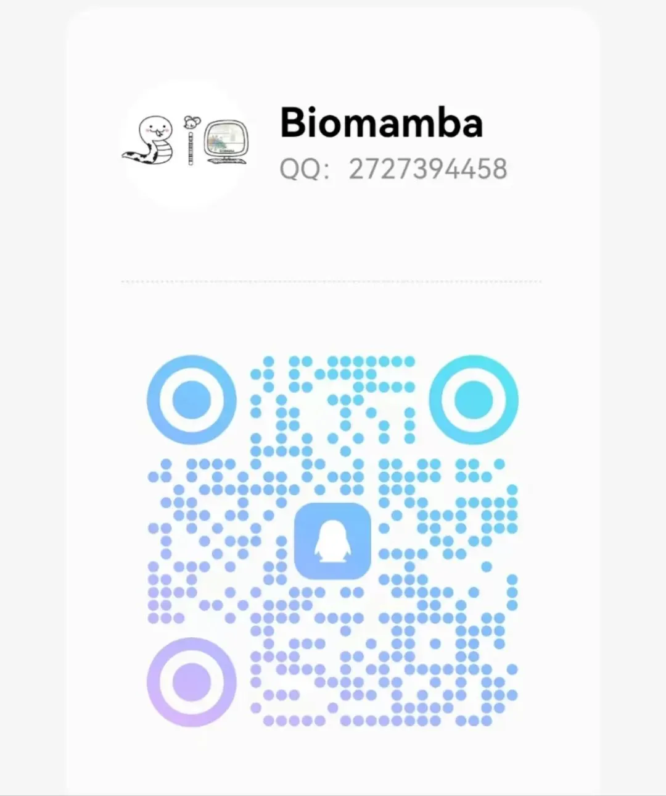

答读者问（三）单细胞测序前景
原文：https://mp.weixin.qq.com/s?__biz=MzAwMzIzOTk5OQ==&mid=2247484280&idx=2&sn=844af02070012a1c2681880596ba51a2&chksm=9b3f7a28ac48f33e95eb906121be8953410ca4c572c8035cb801609a56caf9dcff57fa989602#rd 合集：单细胞教程全收录 / 答读者问
往期回顾：
前几天受邀某公司高管，询问单细胞测序前景相关事宜，对此我当然有一定的看法，但受限于个人知识水平，我的答案相比也会存在偏颇，仅供参考：
问 ：单细胞测序最近出了新仪器，我司在由于是否投资开工，想听听专家的意见答 ：单细胞测序是18年的年度技术，所以在那前后一直是很火的，这一点从发文量就可以看出来：

问 ：对于单细胞测序的前景是否看好？答 ：我对于公司运营的内容了解的不多，但是单就单细胞测序发展而言我还是比较看好的，虽然现在单细胞测序的创新性已经在下降了，技术红利在逐渐消失，但正因为这样，以后的单细胞测序的规模会变得更大，可能以后会像 bulk RNA-seq一样普遍。而且现在空间转录组创新性更强，比较好发文章。但从学术角度上来说我还是比较看好的。 问 ：单细胞的科研意义的话，肯定是没有问题的，但是对于单细胞测序的实际的那个指导意义，您有什么看法嘛？答：这个问题我曾经也想过，其实单细胞测序有一个很大的弊端，看似测了100G的数据，但是平均到每个细胞而言测序深度是非常低的，bulk RNA-seq很多测序结果实验验证都不一致，ScRNA-Seq同样有这个问题。对于应用来说，我公众号里有一些临床的朋友，他们大都是希望通过单细胞测序研究肿瘤。因为肿瘤细胞当中的异质性是很强的，所以单细胞测序是一个很好的解析方法，另外的话单细胞测序比RNA-seq做免疫浸润之类的分析更有可信度。之前还帮一个朋友分析过一个数据，帮他找到了他那个疾病耐药性的靶点。不过总的来说，目前单细胞测序还属于新兴学科，我觉得在应用和临床转化来说还不是很成熟 问 ：我们也发现单细胞测序大家都想做，但是的话，现在据我所知，很多公司都在做这个东西嘛，所以的话烂尾的项目也很多，我不清楚客户对这个项目最后的需求还有目标，我司的还是很担心结不了题的，普通转入组，经费需求较低，单细胞测序动辄十几几十万的，结题是一个很大的问题。答 ：这个问题也很重要，烂尾的原因其实还是出在分析上，因为大家都有很多不同的背景，目前国内真正开设生信专业的院校和规模还是比较小的，很多人都想做，但是单细胞分析这块对人和机器的要求都很高，这是一个很大的障碍。我觉得还是很难，并且单细胞测序的分析这方面是最不可能自动化的，中间设计到成百上千的参数是要不断优化和调整的。 我想说的： 可以看出，单细胞测序确实是一个新兴的学科，许多测序公司对于这一技术的了解也仍处于萌芽阶段，面对大量的经费与数据，公司和科研人员都会面对着同等的压力。当然，挑战与机遇通常也是如影随形。不过也无须担心，最难的数据分析环节，我已经为大家提供了保姆级教程。希望大家能够多学习、多思考，在分析过程中援疑质理而非敷衍了事。教程的推送及B站视频如下：手把手教你做单细胞测序数据分析（一） 手把手教你做单细胞测序数据分析（二） 手把手教你做单细胞测序数据分析（三）——单样本分析 手把手教你做单细胞测序数据分析（四）——多样本整合手把手教你做单细胞测序数据分析（五）、细胞类型注释——从入门到入土
日常留下答疑专用扣扣：
